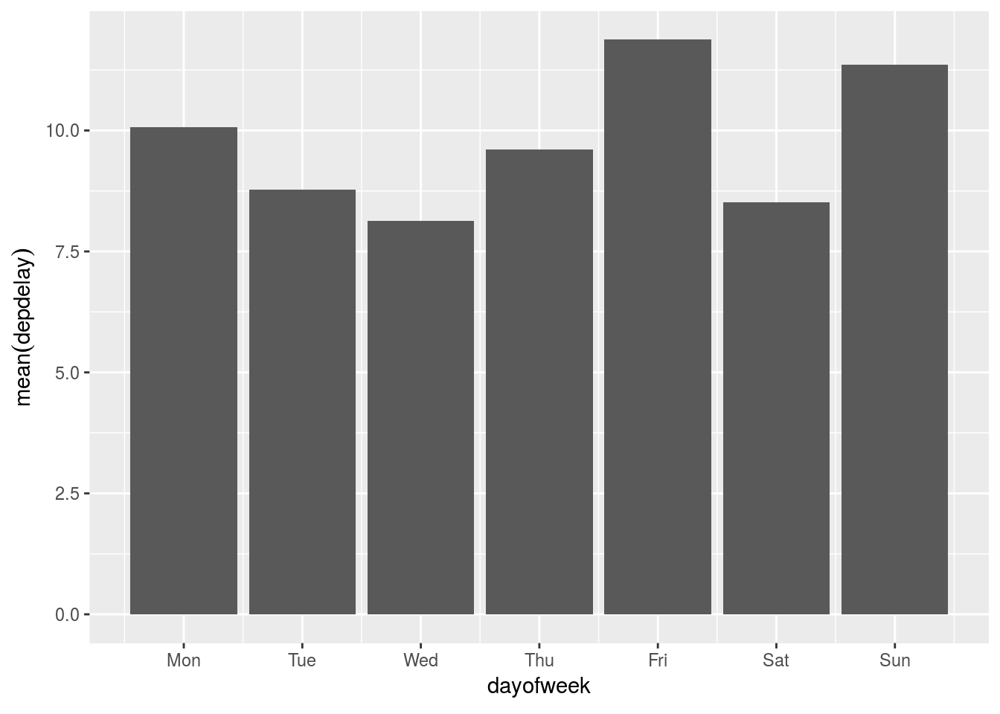

4 Data Visualizations
4.1 Simple plots
Practice pushing the calculations to the database
- Use
collect()bring back the aggregated results
by_month <- flights %>%
group_by(month) %>%
tally() %>%
mutate(n = as.numeric(n)) %>%
collect()
head(by_month)## # A tibble: 6 x 2
## month n
## <dbl> <dbl>
## 1 10 556205
## 2 4 598126
## 3 12 544958
## 4 5 606293
## 5 2 569236
## 6 7 627931- Plot results using
ggplot2
library(ggplot2)
ggplot(by_month) +
geom_line(aes(x = month, y = n)) 
4.2 Visualize using dbplot
Review how to use dbplot to make it easier to plot with databases
- Install and load
dbplot
install.packages("dbplot")
library(dbplot)- Create a line plot using the helper function
dbplot_line()
flights %>%
dbplot_line(month)
- Update the plot’s labels
flights %>%
dbplot_line(month) +
labs(title = "Monthly flights",
x = "Month",
y = "Number of flights") 
4.3 Plot a different aggregation
dbplot allows for aggregate functions, other than record count, to be used for plotting
- Plot the average departure delay by day of week
flights %>%
dbplot_bar(dayofweek, mean(depdelay))
- Change the day numbers to day name labels
flights %>%
dbplot_bar(dayofweek, mean(depdelay)) +
scale_x_continuous(labels = c("Mon", "Tue", "Wed", "Thu", "Fri", "Sat","Sun"),
breaks = 1:7)
4.4 Create a histogram
Use the package’s function to easily create a histogram
- Use the
dbplot_histogram()to build the histogram
flights %>%
dbplot_histogram(distance)
- Adjust the
binwidthto 300
flights %>%
dbplot_histogram(distance, binwidth = 300)
4.5 Raster plot
- Use a
dbplot_raster()to visualizedeptimeversusdepdelay
flights %>%
dbplot_raster(deptime, arrtime)
- Change the plot’s resolution to 500
flights %>%
dbplot_raster(deptime, arrtime, resolution = 500)
4.6 Using the calculate functions
- Use the
db_comptue_raster()function to get the underlying results that feed the plot
departure <- flights %>%
db_compute_raster(deptime, arrtime)
departure## # A tibble: 3,362 x 3
## deptime arrtime `n()`
## <dbl> <dbl> <dbl>
## 1 0 0 136345
## 2 0 24 126
## 3 0 48 249
## 4 0 96 817
## 5 0 120 954
## 6 0 144 394
## 7 0 192 290
## 8 0 216 416
## 9 0 240 302
## 10 0 288 112
## # ... with 3,352 more rows- Plot the results “manually”
departure %>%
filter(`n()` > 1000) %>%
ggplot() +
geom_raster(aes(x = deptime, y = arrtime, fill = `n()`))
4.7 Under the hood (II)
Review how dbplot pushes histogram and raster calculations to the database
- Use the
db_bin()command to see the resulting tidy eval formula
db_bin(field)## (((max(field) - min(field))/(30)) * ifelse((as.integer(floor(((field) -
## min(field))/((max(field) - min(field))/(30))))) == (30),
## (as.integer(floor(((field) - min(field))/((max(field) - min(field))/(30))))) -
## 1, (as.integer(floor(((field) - min(field))/((max(field) -
## min(field))/(30))))))) + min(field)- Use
trasnlate_sql()andsimulate_odbc_postgresql()to see an example of what the resulting SQL statement looks like
translate_sql(!! db_bin(field), con = simulate_odbc_postgresql())## <SQL> (((max(`field`) OVER () - min(`field`) OVER ()) / (30.0)) * CASE WHEN ((CAST(FLOOR(((`field`) - min(`field`) OVER ()) / ((max(`field`) OVER () - min(`field`) OVER ()) / (30.0))) AS INTEGER)) = (30.0)) THEN ((CAST(FLOOR(((`field`) - min(`field`) OVER ()) / ((max(`field`) OVER () - min(`field`) OVER ()) / (30.0))) AS INTEGER)) - 1.0) ELSE ((CAST(FLOOR(((`field`) - min(`field`) OVER ()) / ((max(`field`) OVER () - min(`field`) OVER ()) / (30.0))) AS INTEGER))) END) + min(`field`) OVER ()